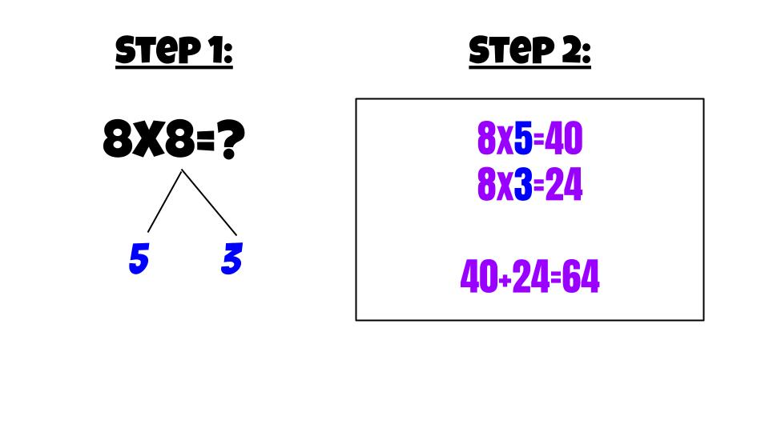

Strategy #1
In multiplication we can use the picture strategy. For example,
if the problem states 5x4 we can draw a picture where there are
five groups and four dots in each to count up that this would be 20 total.
You can also reverse this by having four groups and 5 dots in each. Be careful
with this strategy because if the dots are unclear you could miscount the total.
Strategy #2
The second strategy we can use is skip counting. In skip counting
we look at the problem and decide which number we will skip count and the
other number will be how many times we skip count until we stop. For example,
if we have the problem 5x3, I would choose 5 to skip count by and that means
I need to do this 3 times. So I would skip count 5, 10, 15 and then stop at the third
time. So the answer would be 15.

Strategy #3
The last strategy a break apart stategy. Some problems we
find easier than others. We might have the problem of 8x8 and
I do not want to draw all this out and the skip counting could take forever.
I can take one of the eights from the problem and break it apart to be 5 and 3.
These are easier numbers to multiply. So I can solve 8x5=40 and 8x3=24.
Then I just add the 40 and 24 together to get 64, so I know 8x8=64.
